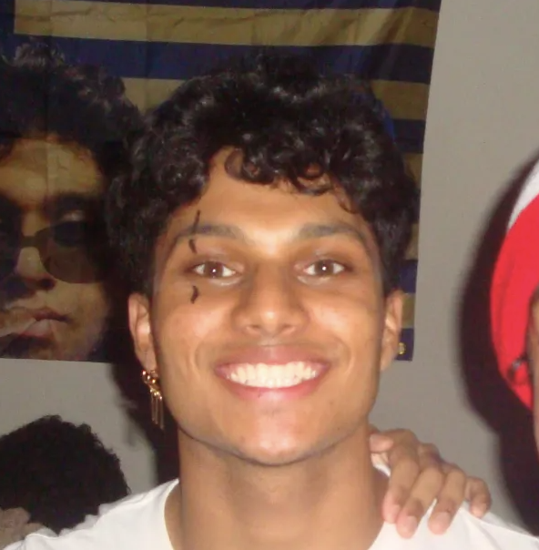

| Computer Science @ Georgia Tech | Aspiring SWE Developer / AI/ML Engineer |
More about me
Hi! I'm Abhiram Chilakamarri — a third-year Computer Science student at Georgia Tech. I enjoy building meaningful software, exploring AI/ML, and developing intuitive full-stack applications.
Outside of tech, I enjoy working out, making art, and picking up new hobbies just for the fun of learning something new.
Bachelor of Science in Computer Science
Aug 2023 - May 2027
Software Engineering Intern
Machine Learning Project Engineer
Full Stack Engineer Intern
Python
SQL
Java
JavaScript
HTML
PyTorch
React
Node.js
AWS
Git
SnapPredict is a machine learning project designed to forecast NFL game outcomes using historical team and player performance data. The project involved collecting and cleaning large datasets containing game statistics, player metrics, team records, and season trends. After extensive preprocessing and feature engineering, multiple predictive models were developed and evaluated using Python, pandas, NumPy, and scikit-learn. Models such as logistic regression, random forests, and gradient boosting were compared to determine which provided the most accurate predictions. Performance was assessed through cross-validation, accuracy metrics, and confusion matrix analysis. The project also includes visualizations that help explain the factors most strongly influencing game outcomes, allowing users to better understand the reasoning behind predictions. Through this work, I gained experience with the complete machine learning pipeline, including data acquisition, feature selection, model training, hyperparameter tuning, evaluation, and communicating insights through data visualization.
Converse with ASL is a mobile application created to make learning and practicing American Sign Language more interactive and accessible. The app uses computer vision techniques powered by MediaPipe to detect and track hand landmarks in real time through a smartphone camera. These hand movements are processed and classified into corresponding ASL letters and gestures, which are then translated into English text for immediate feedback. The project was designed to help users improve sign recognition skills through hands-on practice while also demonstrating how machine learning and computer vision can support accessibility-focused applications. Development involved integrating gesture recognition models, optimizing real-time performance on mobile devices, and creating a user-friendly interface that encourages learning. By combining mobile development, machine learning, and accessibility principles, the project highlights the potential of technology to bridge communication gaps and provide educational tools for both ASL learners and the broader community.
WanderSync is a collaborative travel-planning platform built to simplify group trip organization and itinerary management. Developed using Java/Kotlin and Firebase, the application allows multiple users to create, edit, and manage travel plans simultaneously through real-time synchronization. Users can organize destinations, activities, accommodations, and schedules within a shared itinerary, ensuring everyone stays updated as plans evolve. Firebase services were used to handle authentication, cloud data storage, and real-time database updates, enabling seamless collaboration across devices. The project focused heavily on designing an intuitive user experience that reduces the complexity often associated with coordinating travel among multiple people. Additional features include trip organization tools, itinerary editing, and shared planning workflows that improve communication between travelers. Through building WanderSync, I strengthened my experience with Android development, cloud-based architectures, database design, and real-time application development while solving a practical problem faced by many groups planning trips together.
Feel free to reach out to me through any of the following channels: